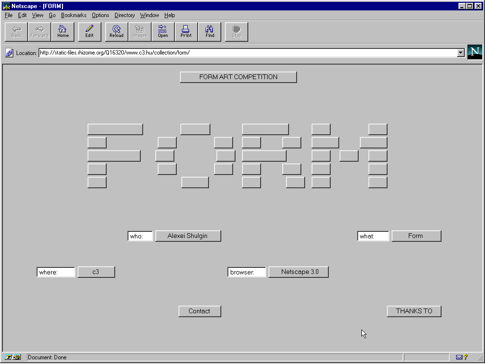
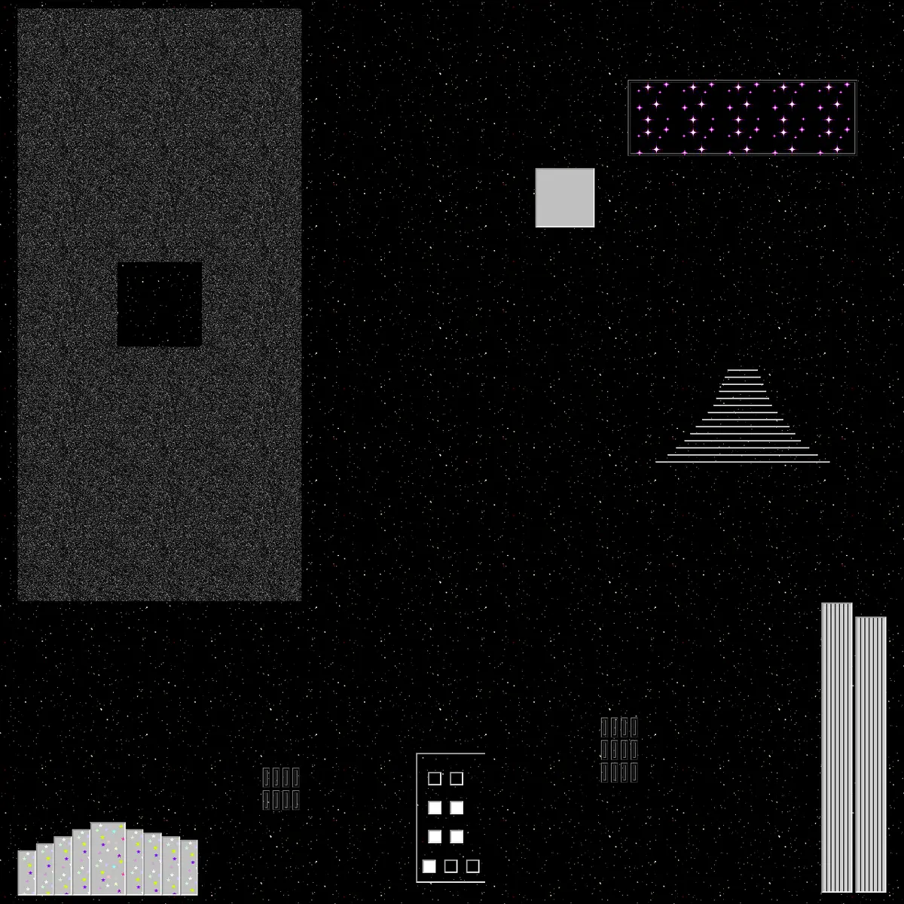

Form Art (1997)
by Alexei Shulgin

Shulgin looks past the ordinary functionalities of HTML buttons, text boxes, and forms, transforming these elements into an interactive artwork.
The internet has become more than just a place to find information. It is a space for creativity, experimentation, and self-expression. This exhibition brings together three net artworks that explore the possibilities of the internet as an artistic medium: Alexei Shulgin's Form Art (1997), Olia Lialina's The Most Beautiful Web Page; SOME UNIVERSE (2002), and Petra Cortright's VVEBCAM (2007). Each artist approaches the internet differently, using its visual language, technology, and culture to challenge traditional ideas of what art can be. Shulgin experiments with basic HTML forms and the limitations of early web design, turning ordinary website elements into art. Lialina explores the internet as an imaginative and personal space, using its structure to create a unique digital experience. Cortright, on the other hand, uses webcam footage and digital effects to explore online identity and self-presentation in the digital age. Together, these works show how the internet can be both a tool and a subject of artistic expression.

Shulgin looks past the ordinary functionalities of HTML buttons, text boxes, and forms, transforming these elements into an interactive artwork.

A seemingly endless website littered with graphics, motifs, and hidden messages over a starry background make for an unique dive into Lialina's showcase of the artistic possibilities websites hold.
A playful demonstration of various webcam filters showcasing the artistic self expression one can achieve through the digital medium.